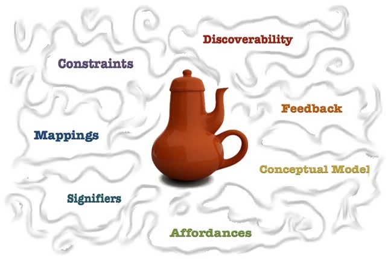

Norman's Design Principles
Norman's design principles provide foundational guidelines for creating accessible and intuitive user experiences. Visibility is crucial, as users need to see key functions and elements immediately. Feedback ensures users understand the results of their actions, creating a seamless interaction. Constraints help guide users by preventing errors, while mapping ensures an intuitive relationship between controls and their effects. Consistency across the design reduces confusion, and affordance makes it clear how an element can be used. Together, these principles form the basis for universal design, ensuring clarity and usability for all users.

Illustration of Norman's Design Principles
Planning Accessible Websites
The journey to an accessible website begins with careful planning and understanding your audience. Using personas can help represent the needs of diverse users, guiding the design process. Creating detailed sitemaps ensures that content is logically organized, while wireframes provide a clear visual structure before development begins. Incorporating accessibility elements, such as high-contrast color schemes, descriptive alt text for images, and properly implemented 'sr-only' classes, ensures the website is usable by people with a variety of needs. These steps are essential to crafting a digital experience that is inclusive and functional for everyone.
Accessibility Tools
A range of tools is available to support the creation of accessible digital experiences. Tools like WAVE Evaluator help identify accessibility issues within webpages, while Nu Validator ensures that HTML code complies with modern standards. The HTML Outliner can analyze a webpage's structure, ensuring it is easy to navigate with screen readers. Using these tools allows developers to refine their designs to accommodate diverse needs, improving accessibility in tables, forms, tabbed navigation, and responsive layouts. These tools also help developers test compatibility across devices, ensuring websites are functional on everything from desktop monitors to mobile screens.